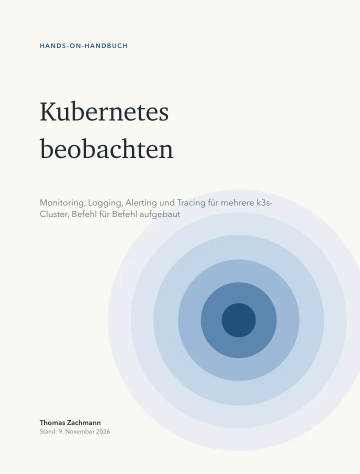

Hands-on-Handbuch · Kostenlos
Kubernetes beobachten
Monitoring, Logging, Alerting und Tracing für mehrere k3s-Cluster, Befehl für Befehl aufgebaut: von drei leeren Ubuntu-VMs bis zu einer zentralen Observability-Plattform mit Langzeitspeicher in S3, Backup und fertigen Dashboards.
- Umfang
- 220 Seiten · 17 Kapitel · Anhang
- Für
- k3s 1.36 · Prometheus · Thanos 0.42 · Loki 3.7 · Tempo · Alloy 1.21
- Format
- PDF · 8,6 MB · Deutsch
- Stand
- November 2026
- Preis
- kostenlos
- Lizenz
- CC BY-ND 4.0
Kein Formular, keine E-Mail-Adresse, kein Newsletter. Der Link lädt die Datei direkt. Weitergabe der unveränderten Datei ist ausdrücklich erlaubt.
Alle Konfigurationsdateien liegen im öffentlichen Repository github.com/thomaszachmann/k3s. Das Buch gehört zur Hands-On-Reihe bei Nyrvex.

Worum es geht
Eine Zentrale für alle Cluster
Sobald es mehr als einen Cluster gibt, reicht ein Grafana pro Cluster nicht mehr. Man will an einer Stelle sehen, was gerade passiert und was vor drei Wochen passiert ist, und Alarme sollen ankommen, bevor die Nutzer etwas merken.
Das Buch baut dafür auf drei k3s-VMs eine zentrale Plattform auf: Die App-Cluster schicken Metriken, Logs und Traces per Alloy über HTTPS an die Zentrale, jeder Cluster als eigener Mandant. Alte Daten liegen günstig in S3, erst im Cluster mit SeaweedFS, dann auf AWS. Zu jedem Schritt gibt es eine Prüfung, woran man erkennt, dass er gewirkt hat.
Es ergänzt das konzeptionelle Buch „Kubernetes Observability Hands-On“.
Vorausgesetzt werden Grundkenntnisse in Linux und Kubernetes. Gebraucht
werden drei Ubuntu-VMs und ein Laptop mit kubectl und
helm.
Inhalt
Von drei leeren VMs bis zum fertigen Dashboard
- Kap. 1–3
- Architektur und Fundament Drei k3s-Cluster, interne Hostnamen mit eigener CA, SeaweedFS als S3-Speicher im Cluster.
- Kap. 4–5
- Metriken für alle Cluster Prometheus und Thanos Receive in der Zentrale, Remote Write per Alloy mit TLS, Basic Auth und einem Mandanten pro Cluster.
- Kap. 6–7
- Grafana und Alarme Grafana komplett als Code, Alertmanager und Thanos Ruler, Routing pro Cluster, Inhibit, Dead Man's Switch.
- Kap. 8–10
- Logs, Traces und Dashboards Loki, Tempo und OpenTelemetry an einer Demo-App, Sprung zwischen Metrik, Log und Trace, sieben fertige Dashboards.
- Kap. 11–12
- S3 auf AWS und Backup Buckets mit minimalen IAM-Rechten und Lifecycle, etcd-Snapshots, Velero und eine Wiederherstellungs-Übung.
- Kap. 13–14
- Ergänzungen und Betrieb Blackbox-Checks, Meta-Monitoring, Kardinalität, SLOs mit Burn-Rate, Pyroscope, DSGVO, Fehlersuche und Updates.
- Kap. 15–16
- Enterprise und Multi-Tenancy Was ein Ausfall der Zentrale kostet (gemessen), Hochverfügbarkeit ohne Datenverlust, Mandanten mit Thanos sauber trennen.
Ehrlich gesagt
Was geprüft wurde und was nicht
- Durchgespielt. Im November 2026 wurde das ganze Buch auf drei k3s-VMs (k3s 1.36) Befehl für Befehl nachgebaut: Installation, Alarme bis zur Mail, Logs, Traces, Dashboards, Velero-Backup, ein 66-minütiger Ausfall der Zentrale und die Multi-Tenancy mit Thanos. Die Screenshots im Buch stammen aus diesem Lauf.
- Nicht durchgespielt. Das Kapitel zu S3 auf AWS und die etcd-Snapshots sind im Buch als ungetestet markiert. Das Enterprise-Kapitel beschreibt Architekturen, die über das Labor hinausgehen, und trennt klar zwischen getestet und Beispiel.
Download
220 Seiten, kostenlos
Wenn Sie Monitoring nicht im Lab, sondern für produktive Cluster aufbauen müssen: Ich mache das beruflich.